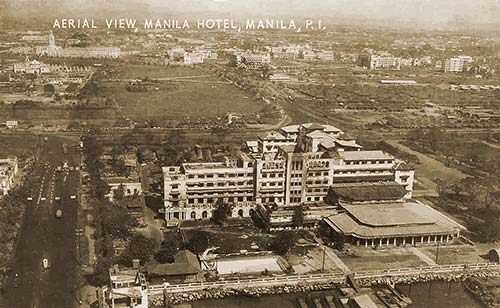

|
j
a v a s c r i p t |
Pg.2/2
February 24, 1945
Some 400 people "parked" at the Manila Hotel went through hell and lost 50 due to American shells. They spent their time at the Winter Garden, and it's on the record that the Japanese even tossed them some food from time to time. No atrocities were committed there. At the Bay View Hotel, however, the Japanese entered a room crowded with women and demanded to have some of them. Several "professionals" in the crowd volunteered their services in order to spare the others. One brave Russian told the rest: "I'll go in. We'll keep them busy ... you all must try to escape." Another version has it that the Japanese violated most of the women there. I'm still checking the stories.

Manila Hotel, 1945
Burnham Green, Luneta & Wallace Field to its upper right Today I heard estimates of civilian casualties in all Manila placed at 100,000. My guess is at least 40,000 including wounded, but it's too early to predict as I have yet to see the half of it. . . . . According to Washington, angry mobs stormed three Japanese embassies in Spain following the publication from official Spanish sources here of reports of atrocities. If [Spanish Consul and Falangist Leader] Del Castaño sent those reports, then it would be in his best interests to play up the reports of atrocities. In view of the destruction of Manila and the loss of civilian lives, it's also in the best interests of the Americans to play up the atrocities angle — with full and silent acceptance by all concerned. I'm just trying to get down to the utter truth. The Americans were able to evacuate some nuns and priests from the Walled City yesterday. Intramuros survivors were mostly women and children; the men are missing — probably executed. It's hard to imagine survivors emerging from the mess of ruins there. I'm told that only small groups of Japanese remain in the Walled City, and the Americans will shell the place heavily tonight. Some Medical "Clearing Company" units have apparently been placed on alert. Earlier, Inocencio told me of the chaotic situation in the provinces as the Japanese retreat, taking all available food and livestock, and in some cases, burning villages in retaliation for guerilla ambushes. He fears that "all Luzon will be destroyed." Paul Heredia, who just slipped in from Nasugbu, Batangas, said the Japanese were burning villages. Civilian casualties are high, and many tried to escape to the American positions in the coast. The Americans landed right in the beach, finding little resistance after a 1-1/2 hour bombardment. An officer told him: We didn't shell the town itself but we would have had there been any Japs there. In two days the Americans had a landing strip ready with C-47 transports bringing in supplies and taking out the wounded. Fighting was so little that the Americans turned down offers of Filipino nurses and doctors to help out. ...ooOoo... |
|
|
|
|